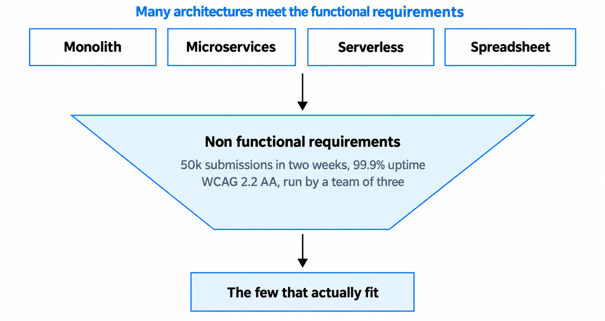
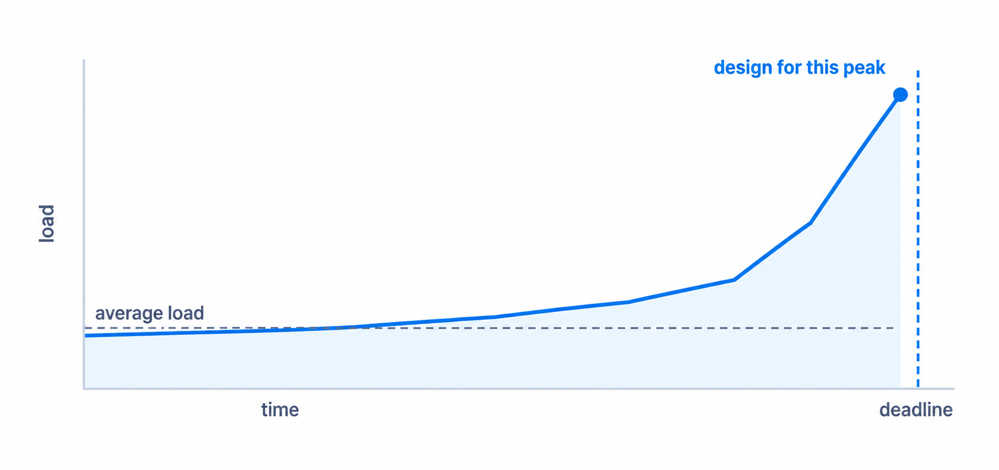
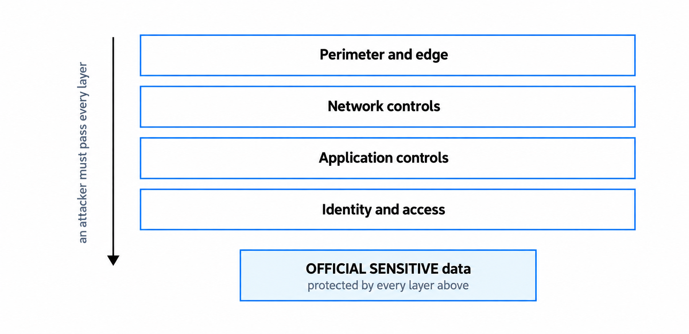
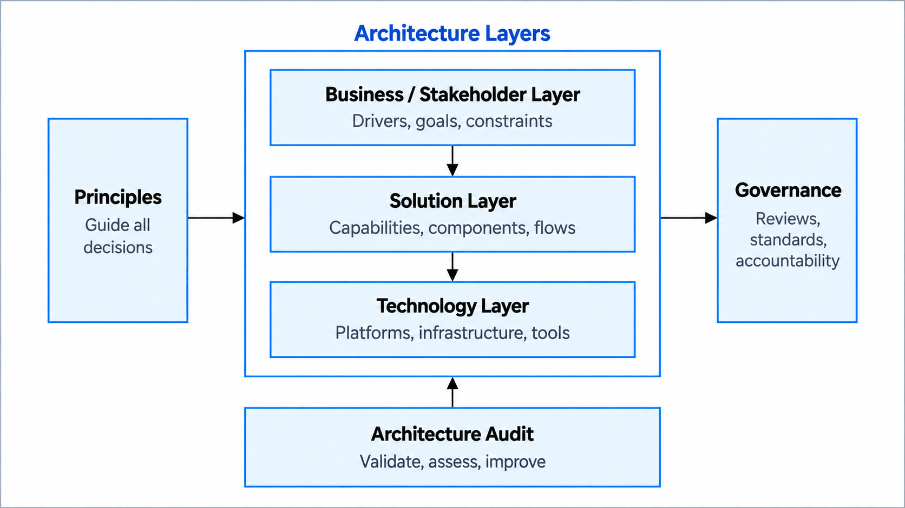

Functional and non functional requirements
Once you understand the problem and the people around it, you need to turn that evidence into requirements that can guide design. Functional requirements describe the capabilities a service needs. Non-functional requirements describe the qualities it needs to exhibit and the conditions in which it must work. Both can shape the architecture.
You'll come away with:
- A clear distinction between capabilities, quality requirements and constraints.
- A practical way to write requirements that are specific enough to guide and test a design.
- Questions for performance, resilience, security, accessibility, operability and change.
- A method for turning requirements into evaluation criteria without jumping to a technology.
Once you understand the problem and the people around it, you need to turn that evidence into requirements that can guide design. Functional requirements describe the capabilities a service needs. Non-functional requirements describe the qualities it needs to exhibit and the conditions in which it must work. Both can shape the architecture.
Requirements turn evidence into design inputs
A functional requirement describes something a user, another system or a business process needs to achieve. For an online reporting service, this might include signing in, saving a draft, submitting a report, amending a submission or receiving confirmation.
A non-functional requirement describes a quality or condition that applies to those capabilities. The same reporting service may need to remain usable during a deadline-day peak, recover within an agreed time after a disruption, protect particular information and work with assistive technology.
"Non-functional" does not mean optional or less important. You may also hear terms such as quality requirement or quality attribute. The ISO/IEC 25010 product quality model provides one recognised set of quality characteristics, but a service may also have legal, policy, commercial, operational and organisational requirements beyond that model.
The distinction is useful, but it is not a rigid taxonomy. A requirement to exchange data with an existing register could be described as functional, while the mandated interface might be recorded as a constraint. What matters is that the need, its source and its effect on the design are clear.
Functional requirements describe the capabilities needed. Quality requirements describe how well those capabilities must work and in what conditions.
Functional requirements can shape architecture too
The feature list does not usually distinguish between all credible architectures, but it can still contain decisions with major architectural consequences. A service that must take payments, exchange data with several public bodies, support delegated authority or continue a process across online and offline channels needs capabilities that affect boundaries, integrations, data, identity and failure handling.
Quality requirements then help the team judge which approaches can provide those capabilities at the required level. A deadline-driven peak, a small support team, a demanding recovery objective or a need to change policy rules frequently may each favour or rule out different approaches.

The diagram is a useful simplification: quality requirements narrow and differentiate credible options. They rarely select one architecture by themselves. Cost, delivery risk, existing capabilities, constraints and evidence about the team and service still matter.
Write requirements around a real scenario
Category labels such as "performance" or "security" are prompts, not requirements. A useful requirement usually makes five things clear:
- Scope: which user, transaction, component, data or service the requirement applies to.
- Expected response or quality: what needs to happen or how the service needs to behave.
- Conditions: the demand, failure, device, operating period or other situation in which it applies.
- Acceptance measure: how good is good enough, where a meaningful measure is possible.
- Evidence and verification: why the requirement exists and how the team will establish that it has been met.
"The service must be fast" is too vague to guide design. A more useful requirement might say:
During the expected submission peak, 95% of completed submission requests should receive confirmation within two seconds, measured from the service boundary, under the agreed load profile.
That example is illustrative, not a default target. The percentile, time, measurement point and load profile need evidence from the service. The requirement should also identify how it will be tested.
Not every useful requirement needs a number. A legal rule, data-sharing condition or security outcome may be expressed in words, but it should still be precise enough for the team to determine whether the design satisfies it. "Comply with all applicable law" and "the service must be secure" simply move the unanswered question elsewhere.
Use categories as prompts, not a form to complete
There is no universal NFR list for every service. Use the areas below to start conversations, then spend effort where the risk, uncertainty and design impact justify it:
- Performance and demand: Which journeys or processes are sensitive to delay? What are the normal, peak and forecast volumes?
- Availability and resilience: When must the service be usable? Which capabilities are critical? How quickly must they recover and how much recent data loss could be tolerated?
- Security and privacy: What information, functions and people need protection? What threats, harms, legal duties and departmental controls apply?
- Accessibility and usability: Who needs to use the service, in which contexts and with which access needs, devices or channels?
- Interoperability and data: Which organisations, systems, standards and data sources must work together? Who owns the data and its quality?
- Operability and support: Who will monitor, deploy, support and recover the service, during which hours and with what skills and tooling?
- Maintainability and change: What is likely to change, how often and how quickly must a safe change be made?
- Cost and sustainability: Which whole-life costs, budgets, resource limits or sustainability outcomes could distinguish the options?
An internal tool used during office hours and a national service with a statutory deadline will not need the same targets or assurance. Do not create a large NFR catalogue merely because a template contains one.
Performance starts with the shape of demand
Performance can include page loading, response time, transaction throughput, integration latency, batch windows and the duration of long-running work. Define the part of the service being measured and the experience or process that the measure protects.
Average demand can hide the period that changes the design. Regulatory returns, grants and other government services may have sharp peaks near a deadline. Use analytics and monitoring from the current service where possible. For a new service, record forecasts as assumptions and test them as evidence improves.

Frontend performance needs its own evidence. The Service Manual guidance on frontend performance recommends setting a performance budget for measures such as load time, number of requests and page size, then measuring throughout development. Test on the devices and connections users actually have, not only a developer's laptop.
Availability percentages need context
"99.9% available" is incomplete unless the team knows what counts as available, where it is measured, the measurement period, the service hours, how planned maintenance is treated and what happens when only part of the journey fails.
Recovery requirements help describe the effect of disruption. A recovery time objective describes the target time for restoring a service or capability. A recovery point objective describes the point in time to which data needs to be recovered and therefore the amount of recent data loss that may be tolerated. Set both from business impact and user need, then test that the service and its dependencies can meet them.
A statutory deadline may justify a different resilience approach from an internal service that can tolerate planned downtime outside working hours. That does not automatically mean multiple regions, active-active infrastructure or another named pattern. Compare the cost, failure behaviour, operational capability and recovery evidence of credible options.
Security and privacy requirements start with risk
The government's Secure by Design approach requires central government departments and arm's-length bodies to incorporate effective security practices into digital delivery. Other public sector organisations can adopt the approach voluntarily. It treats security as work throughout the lifecycle rather than a check at the end.
Start with the information, users, service functions, threats and potential harm. Establish the applicable classification, additional markings, law, departmental policy and risk ownership. Those inputs may create requirements for identity, authorisation, audit, encryption, monitoring, data handling, incident response and other controls, but they do not prescribe the same design for every service.

The existing diagram illustrates defence in depth; it is not an official control stack. Effective controls do not always form a simple perimeter-to-data sequence, and their strength should follow the threats and consequences involved.
Under the Government Security Classifications Policy, OFFICIAL is a classification tier. The -SENSITIVE marking can be added to some OFFICIAL information and is not a separate tier. Departments must also apply their own information security and classifications policies.
Privacy needs the same precision. Identify the purpose and lawful basis for processing, the personal data needed, retention, sharing, access, correction or deletion requirements, and the risks to people. A data protection impact assessment is required where processing is likely to result in a high risk to people's rights and freedoms. Work with data protection and security specialists rather than turning "secure" or "GDPR compliant" into untestable catch-all requirements.
Accessibility is wider than a technical checklist
For public sector bodies within scope of the 2018 accessibility regulations, websites and mobile apps need to meet the applicable accessibility requirements and publish an accessibility statement. Current government guidance uses WCAG 2.2 AA, while also explaining exemptions, excluded content and the assessment required to claim disproportionate burden. Intranets and extranets are covered; the scope for mobile apps is more limited, so check the current guidance rather than relying on "public-facing" as a complete test.
The architecture may need to support semantic content, keyboard operation, accessible authentication and error handling, responsive journeys, assistive technology and accessible document formats. A product or framework does not make the completed service automatically accessible.
Automated checks find only some barriers. Plan manual testing, testing with assistive technology and research with disabled users where appropriate. Accessibility should influence design choices and acceptance criteria from the start, not become a late audit of a largely fixed interface.
Operability, dependencies and change belong in the design
A live service needs people, processes and tooling to operate it. Find out who will support it, when support is available, which skills they have and what operational overhead they can sustain. Requirements may cover monitoring, logging, alerting, deployment, rollback, incident investigation, backup, recovery and manual workarounds.
Dependencies need explicit requirements too. Establish interface behaviour, ownership, data quality, support hours, expected volumes, failure handling and change processes. A service cannot meet an end-to-end availability or response target if a critical dependency cannot support it and no suitable fallback exists.
Maintainability is about the service's credible pattern of change. If policy rules change several times a year, the time and effort needed to make, test and release those changes may distinguish the options. Do not add flexibility for every imaginable future. Use evidence about likely change and revisit the design when that evidence changes.
Make the source and uncertainty visible
Architects should not invent targets because they sound sensible. Evidence may come from user research, service analytics, monitoring, incident records, transaction forecasts, policy, legislation, business-impact analysis, support arrangements, contracts, security and privacy assessment, or experiments in alpha.
When evidence is missing, record an assumption rather than disguising it as fact. State its source, owner, effect on the design, how it will be tested and when it needs to be resolved. A provisional target can still support an experiment, provided the team knows it is provisional.
Requirements also change as the team learns. Keep enough traceability to explain why an important requirement exists and who can agree a change to it. The level of record-keeping should be proportionate: a high-impact legal, resilience or supplier requirement needs stronger evidence and control than a low-risk, reversible preference.
Use requirements to compare options
Requirements should become evaluation criteria, not hidden instructions to use a preferred product or pattern. For the reporting service:
- A deadline-driven peak makes capacity, queuing, degradation and recovery behaviour important.
- A small support team makes operational complexity and supplier support important.
- Frequent changes to reporting rules make safe change and release effort important.
- Personal or sensitive information makes identity, access, audit, handling and privacy controls important.
- Accessibility requirements make the behaviour of the complete journey and its components important.
None of those statements means "use microservices", "use serverless" or "use Kubernetes". They tell the team what evidence to seek and how to compare credible approaches. One option may handle demand efficiently but create operational complexity; another may be easier to support but require earlier capacity planning. The recommendation should explain those trade-offs.
Validate the requirement and verify the solution
Terminology varies, but two separate checks are useful:
- Validate the requirement: confirm that it reflects a real need or obligation, has credible evidence, applies to the stated scope and is feasible enough to guide the work.
- Verify the solution: establish through testing, inspection, monitoring, rehearsal or other evidence that the implemented service meets it.
Functional behaviour may be checked through acceptance tests and user research. Performance and scaling may require representative load tests. Resilience may require recovery or failover exercises. Security evidence can include threat modelling, design and configuration review, automated testing, penetration testing and operational monitoring. Accessibility needs a combination of automated and manual evaluation. No single test proves that a service is secure, accessible or resilient.
Plan verification while writing the requirement. If the team cannot explain how it would know the requirement has been met, the requirement probably needs more work.
How this relates to the Service Standard
Quality requirements support the whole service, not just an architecture document. Several current Service Standard points have particularly direct links:

- Point 5: make sure everyone can use the service.
- Point 9: create a secure service which protects users' privacy.
- Point 11: choose the right tools and technology.
- Point 14: operate a reliable service.
The diagram highlights those four points, but requirements also support other parts of the Standard, including understanding users, solving a whole problem and iterating safely.
Current Service Manual guidance says transactional services developed for central government must be assessed, including internal services used only by civil servants, subject to the published criteria and exceptions. Other services can still use the Standard or arrange a voluntary assessment, and departments may have their own assurance. Assessment is not the reason to define good requirements; it is one place where the team may need to explain the evidence and decisions behind them.
Questions to ask before choosing an architecture
- Which capabilities are essential to the user and policy outcome?
- Which quality requirements could materially change the design or rule out an option?
- What evidence supports each important target, and what remains an assumption?
- Under which demand, failure, device or operating conditions must the target be met?
- Which statements are genuine requirements or constraints, and which are proposed solutions or preferences?
- Who owns the need, risk or obligation, and who can agree a change?
- How will the team validate the requirement and verify the service?
- What new evidence would cause the requirement or architecture decision to be revisited?
A requirement is useful when it changes what you investigate, how you compare options or how you prove the service is good enough.
This is a practitioner guide to solution architecture in UK central government, not an official requirements framework. Terminology, responsibilities and assurance arrangements vary by organisation and service.
Last reviewed September 2026 against the primary sources below. Standards and government guidance change; check the source before relying on them.
- ISO/IEC/IEEE 29148:2018: Requirements engineering
- ISO/IEC 25010:2023: Product quality model
- Service Manual: how to test frontend performance
- UK Government Security: Secure by Design
- Government Security Classifications Policy
- ICO: a guide to lawful basis
- ICO: when a DPIA is required
- Understanding accessibility requirements for public sector bodies
- W3C Web Accessibility Initiative: evaluation tools
- GOV.UK Service Standard
- Check if you need to meet the Service Standard or get an assessment
- NIST glossary: recovery time objective
- NIST glossary: recovery point objective